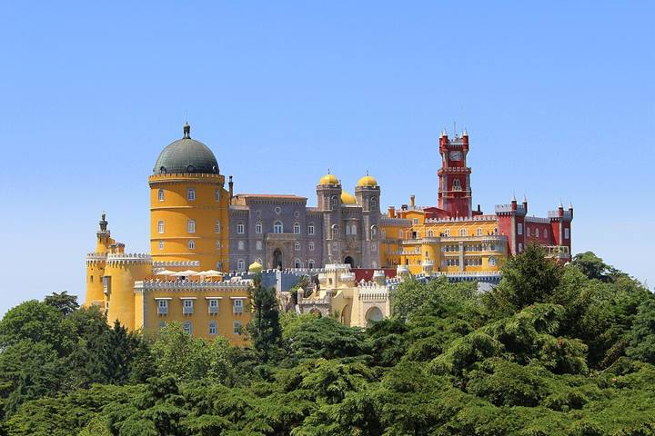
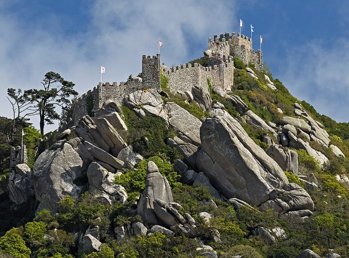
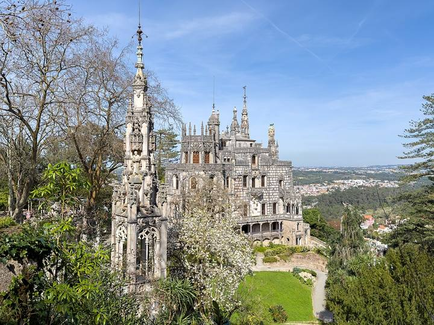
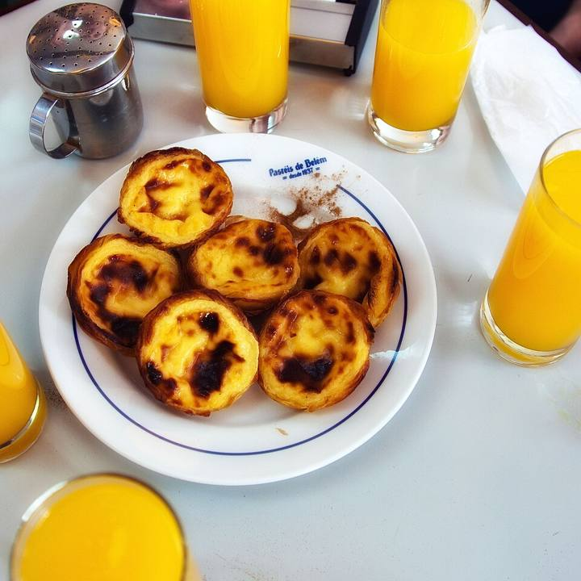
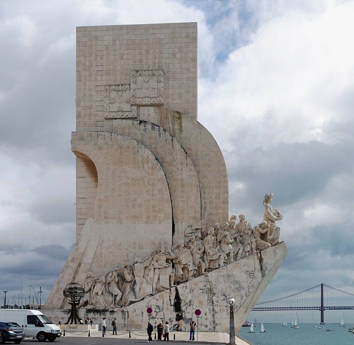

Bagage cabine de 10 kg + 1 petit bagage, pas de soute. Paiement à bord par carte uniquement. Le Fast Track à la sécurité est proposé dans l'appli, il n'a pas été pris.
Largo do Duque de Cadaval 17, gare du Rossio (Estação Ferroviária do Rossio), 2e étage, 1200-160 Lisboa. Métro Restauradores juste devant. Itinéraire Google Maps
Téléphone
+351 913 391 800
Séjour
4 nuits, dortoir mixte de 10 lits, salle de bain partagée
Prix
186 € au total pour 2, petit-déjeuner non compris
Réservations
12184 et 12185 (un par lit), gérées sur Mews (lien dans l'email de confirmation)
Check-in en ligne
Possible avant d'arriver, bouton « Procéder au check-in » ou QR code de l'email
Réception
Ouverte 24h/24
Consigne
Gratuite
Taxe de séjour
Environ 4 € par personne et par nuit, à payer sur place
À apporter
Une serviette chacun
Depuis l'aéroport
Métro ligne rouge jusqu'à Alameda, puis ligne verte jusqu'à Rossio. Environ 30 min.
1 petit bagage seulement (40 × 30 × 20 cm, sous le siège) · pas de bagage cabine 10 kg sur son billet
À faire : enregistrer Enzio sur le retour FR487 dans l'appli Ryanair. Sinon l'enregistrement au comptoir est payant. Le bagage cabine 10 kg commun est sur le billet de Matteo : c'est Matteo qui le porte à l'embarquement.
Départ en voiture de La FourragèreOn vous dépose. Environ 28 km par la L2 puis l'A7 direction Aix / Lyon, sortie « Aéroport Marseille Provence ». 35 min avec de la marge (ralentissements possibles vers Les Arnavaux et Septèmes).
11:35environ
🛬
Dépose devant le Terminal 2Suivre « Dépose-minute ». Environ 1h15 avant la fermeture de la porte.
11:35→ 12:15
🛂
Sécurité, puis porte d'embarquementPas de soute, donc pas de dépôt bagages. Liquides de 100 ml max dans un sac transparent.
avant12:50
🎫
EmbarquementMatteo : file prioritaire, porte arrière, ordre 21, siège 23A, avec le bagage cabine 10 kg commun. Enzio : file normale, porte arrière, ordre 90, siège 33A.
12:50
⛔
Fermeture de la porte30 min avant le vol.
13:20
✈️
Décollage FR486Marseille T2 → Lisbonne T2, 2h25 de vol.
14:45heure Lisbonne
🇵🇹
Atterrissage à LisbonneLisbonne a une heure de moins que Marseille.
≈ 30min
🚇
Métro jusqu'à l'aubergeLigne rouge jusqu'à Alameda, puis ligne verte jusqu'à Rossio.
15:00dès
🛏️
Check-in à l'aubergeLisbon Destination Hostel, gare du Rossio, 2e étage. Infos auberge
Lisbonne · journée pluvieuse, on reste près de l'auberge l'après-midi
08:45
☕
Petit-déj à la Confeitaria NacionalPâtisserie de 1829 sur la Praça da Figueira, à 2 min de l'auberge. On s'assoit à l'intérieur.
9:20départ
🚇
Métro jusqu'à OrienteDepuis Rossio : ligne verte jusqu'à Alameda, correspondance avec la ligne rouge sans ressortir, jusqu'à Oriente. Puis 10 min à pied à l'abri par le centre Vasco da Gama. Environ 30 à 35 min.
10:00
🐟
Visite de l'Oceanário de LisboaBillets réservés · Esplanada Dom Carlos I s/nº, 1990-005 Lisboa (Parque das Nações). Compter 2 h à 2 h 30. Itinéraire Google Maps
12:30
🍽️
Déjeuner au centre Vasco da GamaGrande zone de restauration couverte, juste à côté de l'Oceanário.
13:45
🚇
Retour en métro jusqu'à RossioLigne rouge jusqu'à Alameda, puis verte jusqu'à Rossio, sous l'auberge. Environ 25 min. On peut poser les affaires ou se sécher.
14:30
🚌
Bus 737 jusqu'au châteauDepuis la Praça da Figueira (2 min de l'auberge), environ 15 min. Il monte jusqu'à la porte, sans grimper sous la pluie.
14:45
🏰
Castelo de São JorgeRemparts et panorama sur toute la ville, en plein air. Compter 1 h 30. Si ça tombe fort, voir le plan B. Billet : 17 € adulte, 8,50 € jeune 13–25 ans avec pièce d'identité. Le tarif étudiant (13 €) ne vaut que pour le protocole « Corredor Cultural ». Achat en ligne uniquement sur castelosaojorge.bol.pt, sinon au guichet. Ouvert 9h–18h, dernière entrée et remparts jusqu'à 17h30.
16:30
👀
Miradouro de Santa Luzia et ruelles de l'AlfamaOn redescend à pied, 5 à 10 min. Coucher du soleil vers 17h20 depuis la terrasse aux azulejos. Les pavés mouillés glissent : bonnes semelles.
17:30
⛪
Sé de LisboaLa cathédrale-forteresse, à l'intérieur, 5 min plus bas. Heure de fermeture à vérifier sur place.
19:00
🎶
Dîner fado dans l'AlfamaRetour à l'auberge en 15 min à pied, tout en descente (taxi s'il pleut).
☔
Plan B s'il pleut fort : au retour de l'Oceanário, prendre le bus 759 qui passe devant le Museu Nacional do Azulejo (ouvert le mardi, à l'abri, environ 1 h 30), puis continuer jusqu'à Restauradores. On garde le château pour une éclaircie, et le Panteão Nacional (à l'intérieur, ouvert le mardi) remplace Santa Luzia.
Billets Oceanário
✓ Payé
Quand
Mardi 10 novembre 2026 à 10:00
Réservation
110820754
Billets
2 adultes (13-64 ans), promo en ligne -10 % · 26,91 € chacun
Total
53,82 €
Billets PDF
En pièce jointe de l'email « Résumé de votre achat en Oceanário de Lisboa » (tickets@oceanario.pt, 8 nov), à montrer à l'entrée
Tram 15E jusqu'à BelémDepuis la Praça da Figueira, à 2 min de l'auberge, environ 35 min. Alternative tout à l'abri : métro vert jusqu'à Cais do Sodré, puis train (7 min).
09:30
☕
Petit-déj aux Pastéis de BelémOuvert dès 8h, pastéis de nata chauds. On s'assoit dans les salles du fond.
10:00
🏰
Mosteiro dos JerónimosOuvre à 9h30, réserver le cloître en ligne la veille. Le cloître est entouré d'arcades, on reste au sec. 3 min à pied.
11:30option
🏛️
Museu de MarinhaDans l'aile ouest du monastère : bateaux, maquettes et barques royales. Bon repli si l'averse dure.
12:15
🌉
Padrão dos Descobrimentos et bord du TejoVue sur le Ponte 25 de Abril. En plein air : 15 min pendant une éclaircie. 10 min à pied par le passage souterrain.
13:00
🍽️
Déjeuner à Belém
14:30
🛍️
LX FactoryBoutiques, cafés et la librairie Ler Devagar dans d'anciennes usines : facilement 2 h au sec. Tram 15E jusqu'à Calvário, environ 10 min.
16:30
🍹
Cais do Sodré, Time Out Market et Pink StreetGoûter ou dîner au marché couvert. Si c'est déjà fait lundi, dîner plutôt au Bairro Alto. Tram 15E ou train, environ 15 min.
19:30
🏠
Retour à l'aubergeMétro vert Cais do Sodré → Rossio, 5 min.
☔
Plan B s'il pleut fort : le Museu Nacional dos Coches (carrosses royaux) est à 5 min des Pastéis, et le MAAT (art et architecture, au bord du Tejo) est ouvert le mercredi.
Le plus beau jour de la semaine annoncé · Pena, Maures et Regaleira le matin, Belém en fin d'après-midi
⚠️
Réouverture pas encore confirmée. Après la tempête Charles, tout était fermé mercredi. La réouverture jeudi est prévue (fin de l'alerte à minuit) mais aucun site ne l'a encore annoncée officiellement. Jeudi matin avant de partir, vérifier parquesdesintra.pt (Pena et Maures) et regaleira.pt. Ne réserver qu'une fois la réouverture annoncée.

Palácio da Pena

Castelo dos Mouros

Quinta da Regaleira

Pastéis de Belém

Padrão dos Descobrimentos
07:40
🚆
Train Rossio → SintraGare du Rossio, sous l'auberge. Environ 40 min, direct, terminus Sintra. Trains toutes les 20 min environ : l'horaire exact de 7h40 n'a pas pu être confirmé, regarder le tableau en gare ou l'appli CP. Carte Navegante / Viva Viagem rechargée.
08:20arrivée
🚌
Bus 434 : gare de Sintra → PenaL'arrêt est devant la gare. Environ 20 min de montée, il passe aussi devant l'entrée du Castelo dos Mouros. Pass 24 h lignes 434 et 435 : environ 13,50 € (un trajet simple ≈ 4,50 €, prix à vérifier sur scotturb.com ou auprès du chauffeur). Heure du premier bus en novembre à vérifier à l'arrêt. Sinon : sentier à pied environ 1 h de montée, ou taxi / Uber depuis la gare (une dizaine de minutes).
09:30
🏰
Palácio da Pena et son parcBillet « Visita essencial » (parc + palais) : 20 €, avec un créneau horaire pour le palais : prendre celui de 9h30. Parc ouvert dès 9h, palais 9h30–18h30 (dernière entrée 18h). Compter 2 h. Réserver la Pena
11:30
🥾
Pena → Castelo dos MourosEnviron 10 à 15 min à pied : les deux entrées sont sur la même route de montagne. Ou un arrêt de bus 434.
11:45
🧱
Castelo dos MourosLes remparts sur la crête, vue sur la Pena et jusqu'à l'océan. Billet 12 €. Ouvert 9h30–18h (dernière entrée 17h30). Compter 1 h. Réserver le château des Maures
12:45
⬇️
Descente vers le centre de SintraÀ pied par le sentier de la Vila Sassetti, environ 30 min tout en descente (glissant s'il a plu), ou bus 434 jusqu'au centre, environ 10 min.
13:15
🍽️
Déjeuner au centre historiqueTascantiga, Escadinhas da Fonte da Pipa 2, petits plats portugais à partager (morue frite, joues de porc…). Compter environ 12 à 25 € par personne. Arriver tôt, c'est vite plein ; horaires et prix d'après des guides, à vérifier sur place. Dessert : un travesseiro (feuilleté amande et œuf) chez Casa Piriquita, Rua das Padarias 1, depuis 1862. Quelques euros, prix exact à vérifier. Il y a souvent la queue, mais elle avance vite.
14:15
🌀
Quinta da RegaleiraLe puits initiatique en spirale, les grottes et les tunnels. 10 à 15 min à pied du centre. Billet 20 €, à acheter uniquement sur la billetterie officielle. Ouvert 10h–18h30 (dernière entrée 17h30). Compter 1 h 15. Réserver la Regaleira
15:35
🚆
Train retour Sintra → RossioEnviron 15 à 20 min à pied de la Regaleira jusqu'à la gare. Arrivée vers 16h15 au Rossio, sous l'auberge.
16:20
🚋
Rossio → BelémTram 15E depuis la Praça da Figueira (2 min de l'auberge), environ 35 min. Sans le monastère des Jerónimos.
17:00
🌉
Padrão dos Descobrimentos et bord du TejoLe monument aux navigateurs, vue sur le Ponte 25 de Abril. Ouvert 10h–18h, dernière entrée 17h30 pour monter en haut. Coucher du soleil vers 17h20.
17:45
🥮
Pastéis de BelémLes pastéis de nata d'origine, chauds, à 10 min à pied du Padrão. On s'assoit dans les salles du fond. Heure de fermeture à vérifier.
19:30
🐟
Dîner : bacalhauTrois adresses au choix : • A Licorista e O Bacalhoeiro, Rua dos Sapateiros 218, Baixa, à 5 min de l'auberge. Environ 15 à 25 €. • Taberna Carolina, Rua Anchieta 16, Chiado. Environ 25 €. • Ritalinos, Rua do Possolo 2, Estrela. Très bien noté et environ 12 €, mais loin du centre (sur le chemin entre Belém et la ville, en tram ou taxi).